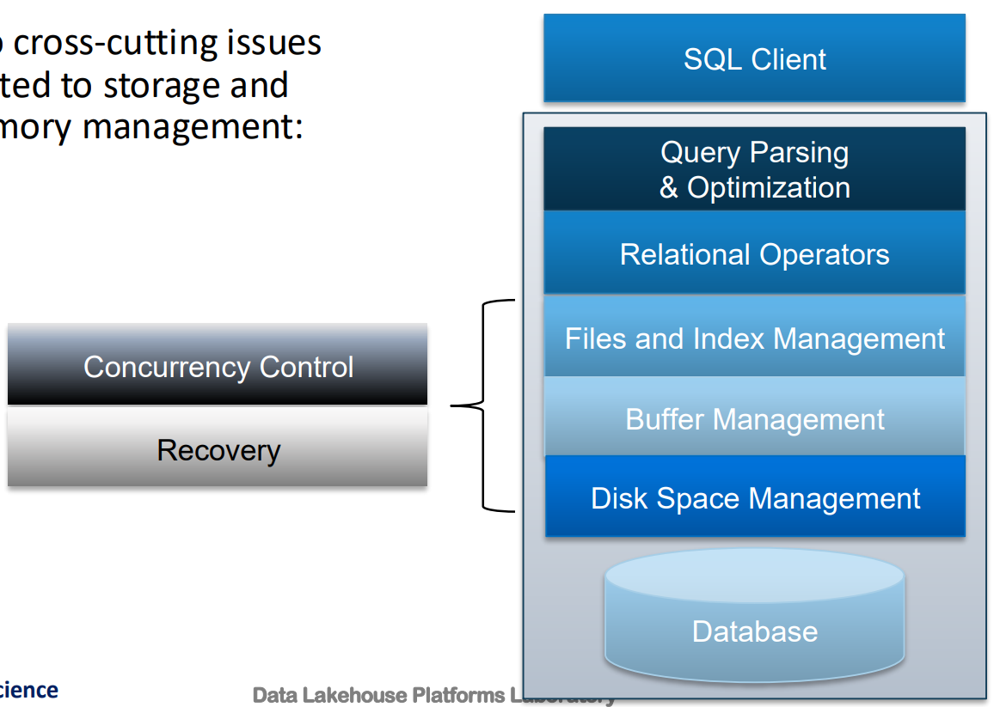
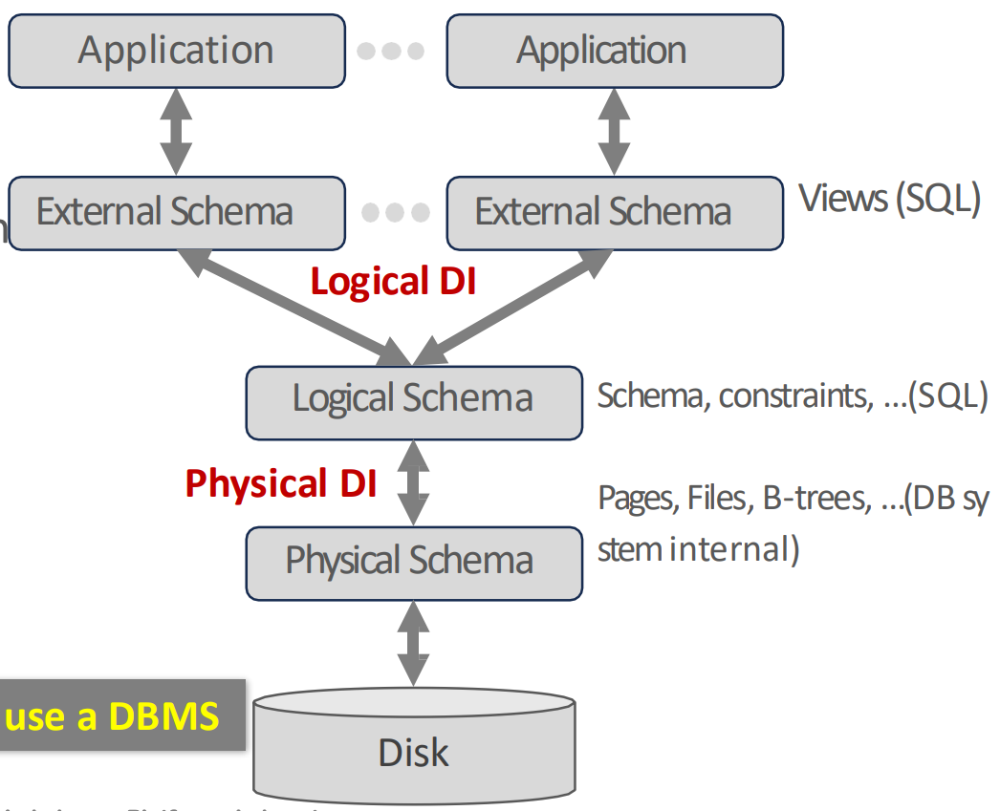

<!DOCTYPE html>
<html><head><title>01. Overview and Relational Model</title><meta charSet="utf-8"/><meta name="viewport" content="width=device-width, initial-scale=1.0"/><meta property="og:title" content="01. Overview and Relational Model"/><meta property="og:description" content="서울대학교 데이터사이언스대학원 정형수 교수님의 &amp;quot;데이터사이언스 응용을 위한 빅데이터 및 지식 관리 시스템&amp;quot; 강의를 필기한 내용입니다. 목차 속기록 날것의 필기록이라 좀 설명이 부실합니다. Database, DBMS § Database: Data + structure + real-world aspect - 현실의 특정 측면을 나타내는 구조화된 데이터들의 모음 Structure definition class: Data Model 그 data model 에 따라 정의한 data 의 structure: Schema Schema 에 따라 구조화된 data: Database DBMS: DB 를 manage 하는 system System: 여러개의 component 로 구성 + 이것이 외부와 소통하는 일련의 계 Three-piece Architecture File 형태의 database 그리고 이것을 관리하는 DBMS DBMS 와 송신하는 lang (interface): SQL Layered Architecture § Query Parsing: token화, 아마도 static analysis, syntax checking 등 Query Plan, Optimization: query 를 relational algebra 로 바꿈에 추가적으로 DB 가 수행하기 편한 순서로 바꾼다."/><meta property="og:image" content="https://mdg.haeramk.im/static/og-image.png"/><meta property="og:width" content="1200"/><meta property="og:height" content="675"/><link rel="icon" href="../../../../../static/icon.png"/><meta name="description" content="서울대학교 데이터사이언스대학원 정형수 교수님의 &amp;quot;데이터사이언스 응용을 위한 빅데이터 및 지식 관리 시스템&amp;quot; 강의를 필기한 내용입니다. 목차 속기록 날것의 필기록이라 좀 설명이 부실합니다. Database, DBMS § Database: Data + structure + real-world aspect - 현실의 특정 측면을 나타내는 구조화된 데이터들의 모음 Structure definition class: Data Model 그 data model 에 따라 정의한 data 의 structure: Schema Schema 에 따라 구조화된 data: Database DBMS: DB 를 manage 하는 system System: 여러개의 component 로 구성 + 이것이 외부와 소통하는 일련의 계 Three-piece Architecture File 형태의 database 그리고 이것을 관리하는 DBMS DBMS 와 송신하는 lang (interface): SQL Layered Architecture § Query Parsing: token화, 아마도 static analysis, syntax checking 등 Query Plan, Optimization: query 를 relational algebra 로 바꿈에 추가적으로 DB 가 수행하기 편한 순서로 바꾼다."/><meta name="generator" content="Quartz"/><link rel="preconnect" href="https://fonts.googleapis.com"/><link rel="preconnect" href="https://fonts.gstatic.com"/><link href="../../../../../index.css" rel="stylesheet" type="text/css" spa-preserve/><link href="https://cdn.jsdelivr.net/npm/katex@0.16.0/dist/katex.min.css" rel="stylesheet" type="text/css" spa-preserve/><link href="https://fonts.googleapis.com/css2?family=IBM Plex Mono&amp;family=Gowun Batang:wght@400;700&amp;family=Gowun Dodum:ital,wght@0,400;0,600;1,400;1,600&amp;display=swap" rel="stylesheet" type="text/css" spa-preserve/><script src="../../../../../prescript.js" type="application/javascript" spa-preserve></script><script type="application/javascript" spa-preserve>const fetchData = fetch(`../../../../../static/contentIndex.json`).then(data => data.json())</script></head><body data-slug="gardens/database/originals/bkms01.fall.2024.gsds.snu.ac.kr/lectures/01.-Overview-and-Relational-Model"><div id="quartz-root" class="page"><div id="quartz-body"><div class="left sidebar"><h1 class="page-title "><a href="../../../../..">Madison Digital Garden</a></h1><div class="spacer mobile-only"></div><div class="search "><div id="search-icon"><p>Search</p><div></div><svg tabIndex="0" aria-labelledby="title desc" role="img" xmlns="http://www.w3.org/2000/svg" viewBox="0 0 19.9 19.7"><title id="title">Search</title><desc id="desc">Search</desc><g class="search-path" fill="none"><path stroke-linecap="square" d="M18.5 18.3l-5.4-5.4"></path><circle cx="8" cy="8" r="7"></circle></g></svg></div><div id="search-container"><div id="search-space"><input autocomplete="off" id="search-bar" name="search" type="text" aria-label="Search for something" placeholder="Search for something"/><div id="results-container"></div></div></div></div><div class="darkmode "><input class="toggle" id="darkmode-toggle" type="checkbox" tabIndex="-1"/><label id="toggle-label-light" for="darkmode-toggle" tabIndex="-1"><svg xmlns="http://www.w3.org/2000/svg" xmlnsXlink="http://www.w3.org/1999/xlink" version="1.1" id="dayIcon" x="0px" y="0px" viewBox="0 0 35 35" style="enable-background:new 0 0 35 35;" xmlSpace="preserve"><title>Light mode</title><path d="M6,17.5C6,16.672,5.328,16,4.5,16h-3C0.672,16,0,16.672,0,17.5    S0.672,19,1.5,19h3C5.328,19,6,18.328,6,17.5z M7.5,26c-0.414,0-0.789,0.168-1.061,0.439l-2,2C4.168,28.711,4,29.086,4,29.5    C4,30.328,4.671,31,5.5,31c0.414,0,0.789-0.168,1.06-0.44l2-2C8.832,28.289,9,27.914,9,27.5C9,26.672,8.329,26,7.5,26z M17.5,6    C18.329,6,19,5.328,19,4.5v-3C19,0.672,18.329,0,17.5,0S16,0.672,16,1.5v3C16,5.328,16.671,6,17.5,6z M27.5,9    c0.414,0,0.789-0.168,1.06-0.439l2-2C30.832,6.289,31,5.914,31,5.5C31,4.672,30.329,4,29.5,4c-0.414,0-0.789,0.168-1.061,0.44    l-2,2C26.168,6.711,26,7.086,26,7.5C26,8.328,26.671,9,27.5,9z M6.439,8.561C6.711,8.832,7.086,9,7.5,9C8.328,9,9,8.328,9,7.5    c0-0.414-0.168-0.789-0.439-1.061l-2-2C6.289,4.168,5.914,4,5.5,4C4.672,4,4,4.672,4,5.5c0,0.414,0.168,0.789,0.439,1.06    L6.439,8.561z M33.5,16h-3c-0.828,0-1.5,0.672-1.5,1.5s0.672,1.5,1.5,1.5h3c0.828,0,1.5-0.672,1.5-1.5S34.328,16,33.5,16z     M28.561,26.439C28.289,26.168,27.914,26,27.5,26c-0.828,0-1.5,0.672-1.5,1.5c0,0.414,0.168,0.789,0.439,1.06l2,2    C28.711,30.832,29.086,31,29.5,31c0.828,0,1.5-0.672,1.5-1.5c0-0.414-0.168-0.789-0.439-1.061L28.561,26.439z M17.5,29    c-0.829,0-1.5,0.672-1.5,1.5v3c0,0.828,0.671,1.5,1.5,1.5s1.5-0.672,1.5-1.5v-3C19,29.672,18.329,29,17.5,29z M17.5,7    C11.71,7,7,11.71,7,17.5S11.71,28,17.5,28S28,23.29,28,17.5S23.29,7,17.5,7z M17.5,25c-4.136,0-7.5-3.364-7.5-7.5    c0-4.136,3.364-7.5,7.5-7.5c4.136,0,7.5,3.364,7.5,7.5C25,21.636,21.636,25,17.5,25z"></path></svg></label><label id="toggle-label-dark" for="darkmode-toggle" tabIndex="-1"><svg xmlns="http://www.w3.org/2000/svg" xmlnsXlink="http://www.w3.org/1999/xlink" version="1.1" id="nightIcon" x="0px" y="0px" viewBox="0 0 100 100" style="enable-background='new 0 0 100 100'" xmlSpace="preserve"><title>Dark mode</title><path d="M96.76,66.458c-0.853-0.852-2.15-1.064-3.23-0.534c-6.063,2.991-12.858,4.571-19.655,4.571  C62.022,70.495,50.88,65.88,42.5,57.5C29.043,44.043,25.658,23.536,34.076,6.47c0.532-1.08,0.318-2.379-0.534-3.23  c-0.851-0.852-2.15-1.064-3.23-0.534c-4.918,2.427-9.375,5.619-13.246,9.491c-9.447,9.447-14.65,22.008-14.65,35.369  c0,13.36,5.203,25.921,14.65,35.368s22.008,14.65,35.368,14.65c13.361,0,25.921-5.203,35.369-14.65  c3.872-3.871,7.064-8.328,9.491-13.246C97.826,68.608,97.611,67.309,96.76,66.458z"></path></svg></label></div></div><div class="center"><div class="page-header"><div class="popover-hint"><h1 class="article-title ">01. Overview and Relational Model</h1><p class="content-meta ">Sep 02, 2024, 8 min read</p><ul class="tags "><li><a href="../../../../../tags/database" class="internal tag-link">#database</a></li><li><a href="../../../../../tags/originals" class="internal tag-link">#originals</a></li><li><a href="../../../../../tags/snu-bkms24f" class="internal tag-link">#snu-bkms24f</a></li></ul></div></div><article class="popover-hint"><blockquote class="callout" data-callout="info">
<div class="callout-title">
                  <div class="callout-icon"><svg xmlns="http://www.w3.org/2000/svg" width="100%" height="100%" viewBox="0 0 24 24" fill="none" stroke="currentColor" stroke-width="2" stroke-linecap="round" stroke-linejoin="round"><circle cx="12" cy="12" r="10"></circle><line x1="12" y1="16" x2="12" y2="12"></line><line x1="12" y1="8" x2="12.01" y2="8"></line></svg></div>
                  <div class="callout-title-inner"><p>서울대학교 데이터사이언스대학원 정형수 교수님의 &quot;데이터사이언스 응용을 위한 빅데이터 및 지식 관리 시스템&quot; 강의를 필기한 내용입니다. </p></div>
                  
                </div>
<ul>
<li><a href="../../../../../gardens/database/originals/bkms01.fall.2024.gsds.snu.ac.kr/(SNU-GSDS)-Bigdata-and-Knowledge-Management-Systems-01" class="internal" data-slug="gardens/database/originals/bkms01.fall.2024.gsds.snu.ac.kr/(SNU-GSDS)-Bigdata-and-Knowledge-Management-Systems-01">목차</a></li>
</ul>
</blockquote>
<blockquote class="callout" data-callout="warning">
<div class="callout-title">
                  <div class="callout-icon"><svg xmlns="http://www.w3.org/2000/svg" width="100%" height="100%" viewBox="0 0 24 24" fill="none" stroke="currentColor" stroke-width="2" stroke-linecap="round" stroke-linejoin="round"><path d="m21.73 18-8-14a2 2 0 0 0-3.48 0l-8 14A2 2 0 0 0 4 21h16a2 2 0 0 0 1.73-3Z"></path><line x1="12" y1="9" x2="12" y2="13"></line><line x1="12" y1="17" x2="12.01" y2="17"></line></svg></div>
                  <div class="callout-title-inner"><p>속기록 </p></div>
                  
                </div>
<ul>
<li>날것의 필기록이라 좀 설명이 부실합니다.</li>
</ul>
</blockquote>
<h2 id="database-dbms">Database, DBMS<a aria-hidden="true" tabindex="-1" href="#database-dbms" class="internal"> §</a></h2>
<ul>
<li>Database: Data + structure + real-world aspect - 현실의 특정 측면을 나타내는 구조화된 데이터들의 모음
<ul>
<li>Structure definition class: <em>Data Model</em></li>
<li>그 data model 에 따라 정의한 data 의 structure: <em>Schema</em></li>
<li>Schema 에 따라 구조화된 data: <em>Database</em></li>
</ul>
</li>
<li>DBMS: DB 를 manage 하는 system
<ul>
<li>System: 여러개의 component 로 구성 + 이것이 외부와 소통하는 일련의 계</li>
</ul>
</li>
<li>Three-piece Architecture
<ul>
<li>File 형태의 database</li>
<li>그리고 이것을 관리하는 DBMS</li>
<li>DBMS 와 송신하는 lang (interface): SQL</li>
</ul>
</li>
</ul>
<h2 id="layered-architecture">Layered Architecture<a aria-hidden="true" tabindex="-1" href="#layered-architecture" class="internal"> §</a></h2>
<p></p>
<ol>
<li><em>Query Parsing</em>: token화, 아마도 static analysis, syntax checking 등</li>
<li><em>Query Plan, Optimization</em>: query 를 relational algebra 로 바꿈에 추가적으로 DB 가 수행하기 편한 순서로 바꾼다.
<ul>
<li>어떻게 하는 것이 동일한 결과가 나오면서도 가장 실행시간이 짧을 것인지 optimizer 가 판단하여 query plan (plan tree) 을 짠다.</li>
<li>근데 이것을 완벽하게 estimation 할 수는 없다: N-P problem</li>
<li>그리고 이런 query plan 을 미리 구워놓을 수도 있다더라.</li>
<li><em>Plan Tree</em>: 어떤 데이터를 가져와서 어떻게 처리할지에 대해 step 별로 tree 의 leaf 에 두고 차곡차곡 올라오면서 처리</li>
</ul>
</li>
<li><em>Relational Operator</em>: 그리고 이 plan tree 의 각 node 를 처리하는 놈
<ul>
<li>Relational operator 아래에 <em>Query Executor</em> (<em>QE</em>) 가 있어서 여기서 BFS (와 유사… volcano model) 식으로 query plan node 를 처리함</li>
</ul>
</li>
<li><em>Index Management</em> (<em>Access Methods</em>): PK 와 같은 abstraction 으로는 데이터의 실제 physical location 을 알 수 없기 때문에 이 간극을 메우기 위해 index 가 필요함
<ul>
<li>Index 는 key 와 location 을 연결지어주는 놈</li>
<li>B+tree 나 hash 등의 방법으로 lookup 을 도와줌</li>
<li>다만 index 가 없어도 correctness 에는 문제가 없다: full scan 을 하면 되기 때문
<ul>
<li>하지만 당연히 느리다</li>
</ul>
</li>
</ul>
</li>
<li><em>Buffer Manager</em>: 매 read, write 마다 io 를 할수는 없기 때문에 buffer (cache) management 가 필요
<ul>
<li>Write 의 경우에 잠깐 갖고 있다가 한꺼번에: buffer (write buffering)</li>
<li>Read 의 경우에 갖고 와서 다음 read 에 대응: cache (read cache)</li>
<li>물론 이쪽도 없어도 된다; 매번 io 하면 되니까</li>
</ul>
</li>
<li><em>Disk Space Manager</em> (<em>Storage Manager</em>): 그리고 마지막 layer 에 실제로 io 를 하는 disk space management 가 있다.</li>
<li>Index, buffer, disk mgmt 에 concurrency, recovery control 이 들어가게 되고 저 concurrency + recovery 가 transaction manager 이다.
<ul>
<li>Client 혼자 사용하고 있는 것처럼 느끼게 하기 위해 concurrency 가 필요하다.</li>
</ul>
</li>
</ol>
<ul>
<li>여기서 Relational operator (+ QE) 윗부분이 <em>Frontend Engine</em>, 그 아래가 <em>Backend Engine</em>
<ul>
<li>위의 <em>Frontend Engine</em> 이 있으면 SQL, 없으면 No-SQL</li>
<li>데이터를 다루는 모든 시스템에는 저 <em>Backend Engine</em> 이 들어가있다.</li>
</ul>
</li>
</ul>
<blockquote class="callout" data-callout="info">
<div class="callout-title">
                  <div class="callout-icon"><svg xmlns="http://www.w3.org/2000/svg" width="100%" height="100%" viewBox="0 0 24 24" fill="none" stroke="currentColor" stroke-width="2" stroke-linecap="round" stroke-linejoin="round"><circle cx="12" cy="12" r="10"></circle><line x1="12" y1="16" x2="12" y2="12"></line><line x1="12" y1="8" x2="12.01" y2="8"></line></svg></div>
                  <div class="callout-title-inner"><p>여기부터는 <code>2024-09-04</code> 강의</p></div>
                  
                </div>
</blockquote>
<h2 id="db-from-scratch-problems-with-the-csv-approach">DB from Scratch: Problems with the CSV Approach<a aria-hidden="true" tabindex="-1" href="#db-from-scratch-problems-with-the-csv-approach" class="internal"> §</a></h2>
<ul>
<li><em>Data Integrity</em>: 데이터의 무결성을 어떻게 보존하지?
<ul>
<li>가령 존재하지 않는 artist 의 album 을 추가하는 것을 어떻게 막을 수 있지?</li>
</ul>
</li>
<li><em>Implementation</em>: 어떻게 빠르게 작업을 처리하지?
<ul>
<li>Linear search 는 너무 느리다. 이걸 어떻게 빠르게 할 수 있을까?</li>
<li>Data race 는 어떻게 해결하지?</li>
</ul>
</li>
<li><em>Durability</em>:
<ul>
<li>DR (Disaster Recovery) 는 어떻게 하지? 어떻게 복구하지?</li>
</ul>
</li>
<li>이러한 문제들을 이미 해결해놓고 적절한 API 를 제공해 사용자가 사용할 수 있게 해주는 것이 DBMS 이다.</li>
</ul>
<h2 id="relational-data-model-rdm">Relational Data Model, RDM<a aria-hidden="true" tabindex="-1" href="#relational-data-model-rdm" class="internal"> §</a></h2>
<ul>
<li>Edgar ted codd 선생이 제안</li>
<li>DB 가 real-world 의 한 측면을 캡쳐한 구조화된 데이터인데, 이 real-world 를 어떻게 data 의 형태로 abstract 할 지가 <em>Data Model</em> 이다.
<ul>
<li>이 data model 에는 relational , NoSQL 등등이 있다.</li>
</ul>
</li>
<li>RDM 은 (1) 대상과 (2) 대상간의 관계 를 모델링하는 방법이다.
<ul>
<li>Real world 에서 우리가 describe 하고자 하는 대상을 <em>Entity</em> 라고 한다.</li>
<li>그리고 이 entity 간의 <em>Relation</em> 도 describe 할 필요가 있을거고
<ul>
<li><em>Relation</em> 에서는 어떤 놈들이 관계가 있는지 그 대상들을 명확하게 특정할 수 있어야 한다.</li>
<li>그래서 entity 의 어떤 tuple 을 고유하게 특정하기 위한 PK 와</li>
<li>그것을 참고 (reference) 하고 있는 FK 가 필요한거고</li>
<li>이런 참조관계가 모순 없이 지켜져야 한다는 것이 <em>Referential Integrity</em> (<em>FK Constraint</em>) 이다.</li>
<li>이러한 <em>Entity</em> 와 <em>Relation</em> 은 <em>Table</em> 의 형태로 구현이 된다.</li>
<li>러프하게는 <em>Entity</em>, <em>Relation</em>, <em>Table</em> 을 같은 의미로 받아들여도 된다.</li>
</ul>
</li>
<li>그리고 이 대상에 대해 기술하고자 하는 여러 특징들을 <em>Attribute</em> 라고 한다.
<ul>
<li>즉, column</li>
</ul>
</li>
<li>이때 어떤 attribute 들이 있고 어떤 자료형을 가지고 있는지를 “구체적”으로 기술해놓은 spec 문서같은 이놈이 <em>Relational Schema</em> 이다.</li>
</ul>
</li>
</ul>
<h2 id="data-independence">Data independence<a aria-hidden="true" tabindex="-1" href="#data-independence" class="internal"> §</a></h2>
<p></p>
<ul>
<li>이건 data 의 schema change 가 다른 계층에는 영향을 주지 않도록 해야 한다는 원칙이다.</li>
<li>가령 어떤 데이터가 어떤 파일에 저장되어있는지 (즉, <em>Physical Schema</em>) 가 바뀌어도 그 위의 SQL (즉, <em>Logical Schema</em>) 를 바꾸지 않아도 되게끔 한다는 것.
<ul>
<li>이것이 <em>Physical Data Independence</em> (<em>Physical DI</em>) 다.</li>
</ul>
</li>
<li><em>Logical DI</em> 는 external schema 인 “view” 와 SQL 을 분리:
<ul>
<li>즉, SQL 을 바꿔도 view 를 바꾸지는 않아도 된다는 것.</li>
</ul>
</li>
<li>참고) <em>Indirection</em>: logical address 와 physical address 를 분리해서 physical 이 변경되어도 logical address 는 변경하지 않아도 되게 하는 기법
<ul>
<li>이 mapping 을 <em>Indirection Mapping Table</em> 이라고 한다.</li>
<li>DBMS 에서는 storage manager 가 관리한다</li>
</ul>
</li>
</ul>
<h2 id="rdm">RDM<a aria-hidden="true" tabindex="-1" href="#rdm" class="internal"> §</a></h2>
<ul>
<li>table, relation, tuple, record, attribute 뭔지 다 알테니 패스</li>
<li><code>NULL</code> 은 “undefined” 의 의미이다.</li>
<li>Tuple 을 unique 하게 특정하는 attribute 를 PK 로 한다.</li>
<li>Relationship 을 위해 다른 entity 의 PK 를 가리키는데 사용되는 놈이 FK
<ul>
<li>이 FK 는 어떤 PK 를 당연히 가리키고 있어야 된다: 그래야 하나를 특정할 수 있으므로.</li>
<li>또한 update 시 FK constraint violation checking 을 위해서도 필요하다.</li>
</ul>
</li>
</ul></article></div><div class="right sidebar"><div class="graph "><h3>Graph View</h3><div class="graph-outer"><div id="graph-container" data-cfg="{&quot;drag&quot;:true,&quot;zoom&quot;:true,&quot;depth&quot;:1,&quot;scale&quot;:1.1,&quot;repelForce&quot;:0.5,&quot;centerForce&quot;:0.3,&quot;linkDistance&quot;:30,&quot;fontSize&quot;:0.6,&quot;opacityScale&quot;:1,&quot;showTags&quot;:true,&quot;removeTags&quot;:[]}"></div><svg version="1.1" id="global-graph-icon" xmlns="http://www.w3.org/2000/svg" xmlnsXlink="http://www.w3.org/1999/xlink" x="0px" y="0px" viewBox="0 0 55 55" fill="currentColor" xmlSpace="preserve"><path d="M49,0c-3.309,0-6,2.691-6,6c0,1.035,0.263,2.009,0.726,2.86l-9.829,9.829C32.542,17.634,30.846,17,29,17
	s-3.542,0.634-4.898,1.688l-7.669-7.669C16.785,10.424,17,9.74,17,9c0-2.206-1.794-4-4-4S9,6.794,9,9s1.794,4,4,4
	c0.74,0,1.424-0.215,2.019-0.567l7.669,7.669C21.634,21.458,21,23.154,21,25s0.634,3.542,1.688,4.897L10.024,42.562
	C8.958,41.595,7.549,41,6,41c-3.309,0-6,2.691-6,6s2.691,6,6,6s6-2.691,6-6c0-1.035-0.263-2.009-0.726-2.86l12.829-12.829
	c1.106,0.86,2.44,1.436,3.898,1.619v10.16c-2.833,0.478-5,2.942-5,5.91c0,3.309,2.691,6,6,6s6-2.691,6-6c0-2.967-2.167-5.431-5-5.91
	v-10.16c1.458-0.183,2.792-0.759,3.898-1.619l7.669,7.669C41.215,39.576,41,40.26,41,41c0,2.206,1.794,4,4,4s4-1.794,4-4
	s-1.794-4-4-4c-0.74,0-1.424,0.215-2.019,0.567l-7.669-7.669C36.366,28.542,37,26.846,37,25s-0.634-3.542-1.688-4.897l9.665-9.665
	C46.042,11.405,47.451,12,49,12c3.309,0,6-2.691,6-6S52.309,0,49,0z M11,9c0-1.103,0.897-2,2-2s2,0.897,2,2s-0.897,2-2,2
	S11,10.103,11,9z M6,51c-2.206,0-4-1.794-4-4s1.794-4,4-4s4,1.794,4,4S8.206,51,6,51z M33,49c0,2.206-1.794,4-4,4s-4-1.794-4-4
	s1.794-4,4-4S33,46.794,33,49z M29,31c-3.309,0-6-2.691-6-6s2.691-6,6-6s6,2.691,6,6S32.309,31,29,31z M47,41c0,1.103-0.897,2-2,2
	s-2-0.897-2-2s0.897-2,2-2S47,39.897,47,41z M49,10c-2.206,0-4-1.794-4-4s1.794-4,4-4s4,1.794,4,4S51.206,10,49,10z"></path></svg></div><div id="global-graph-outer"><div id="global-graph-container" data-cfg="{&quot;drag&quot;:true,&quot;zoom&quot;:true,&quot;depth&quot;:-1,&quot;scale&quot;:0.9,&quot;repelForce&quot;:0.5,&quot;centerForce&quot;:0.3,&quot;linkDistance&quot;:30,&quot;fontSize&quot;:0.6,&quot;opacityScale&quot;:1,&quot;showTags&quot;:true,&quot;removeTags&quot;:[]}"></div></div></div><div class="toc desktop-only"><button type="button" id="toc"><h3>Table of Contents</h3><svg xmlns="http://www.w3.org/2000/svg" width="24" height="24" viewBox="0 0 24 24" fill="none" stroke="currentColor" stroke-width="2" stroke-linecap="round" stroke-linejoin="round" class="fold"><polyline points="6 9 12 15 18 9"></polyline></svg></button><div id="toc-content"><ul class="overflow"><li class="depth-0"><a href="#database-dbms" data-for="database-dbms">Database, DBMS</a></li><li class="depth-0"><a href="#layered-architecture" data-for="layered-architecture">Layered Architecture</a></li><li class="depth-0"><a href="#db-from-scratch-problems-with-the-csv-approach" data-for="db-from-scratch-problems-with-the-csv-approach">DB from Scratch: Problems with the CSV Approach</a></li><li class="depth-0"><a href="#relational-data-model-rdm" data-for="relational-data-model-rdm">Relational Data Model, RDM</a></li><li class="depth-0"><a href="#data-independence" data-for="data-independence">Data independence</a></li><li class="depth-0"><a href="#rdm" data-for="rdm">RDM</a></li></ul></div></div><div class="backlinks "><h3>Backlinks</h3><ul class="overflow"><li><a href="../../../../../gardens/database/originals/bkms01.fall.2024.gsds.snu.ac.kr/(SNU-GSDS)-Bigdata-and-Knowledge-Management-Systems-01" class="internal">(SNU GSDS) Bigdata and Knowledge Management Systems 01</a></li></ul></div></div></div><footer class><hr/><p>Created with <a href="https://quartz.jzhao.xyz/">Quartz v4.1.0</a>, © 2025</p><ul><li><a href="https://github.com/haeramkeem">GitHub</a></li><li><a href="https://www.linkedin.com/in/haeram-kim-277404220">LinkedIn</a></li><li><a href="mailto:haeram.kim1@gmail.com">Email</a></li></ul></footer></div></body><script type="application/javascript">// quartz/components/scripts/quartz/components/scripts/callout.inline.ts
function toggleCallout() {
  const outerBlock = this.parentElement;
  outerBlock.classList.toggle(`is-collapsed`);
  const collapsed = outerBlock.classList.contains(`is-collapsed`);
  const height = collapsed ? this.scrollHeight : outerBlock.scrollHeight;
  outerBlock.style.maxHeight = height + `px`;
  let current = outerBlock;
  let parent = outerBlock.parentElement;
  while (parent) {
    if (!parent.classList.contains(`callout`)) {
      return;
    }
    const collapsed2 = parent.classList.contains(`is-collapsed`);
    const height2 = collapsed2 ? parent.scrollHeight : parent.scrollHeight + current.scrollHeight;
    parent.style.maxHeight = height2 + `px`;
    current = parent;
    parent = parent.parentElement;
  }
}
function setupCallout() {
  const collapsible = document.getElementsByClassName(
    `callout is-collapsible`
  );
  for (const div of collapsible) {
    const title = div.firstElementChild;
    if (title) {
      title.removeEventListener(`click`, toggleCallout);
      title.addEventListener(`click`, toggleCallout);
      const collapsed = div.classList.contains(`is-collapsed`);
      const height = collapsed ? title.scrollHeight : div.scrollHeight;
      div.style.maxHeight = height + `px`;
    }
  }
}
document.addEventListener(`nav`, setupCallout);
window.addEventListener(`resize`, setupCallout);
</script><script type="module">
          import mermaid from 'https://cdn.jsdelivr.net/npm/mermaid/dist/mermaid.esm.min.mjs';
          const darkMode = document.documentElement.getAttribute('saved-theme') === 'dark'
          mermaid.initialize({
            startOnLoad: false,
            securityLevel: 'loose',
            theme: darkMode ? 'dark' : 'default'
          });
          document.addEventListener('nav', async () => {
            await mermaid.run({
              querySelector: '.mermaid'
            })
          });
          </script><script src="https://cdn.jsdelivr.net/npm/katex@0.16.7/dist/contrib/copy-tex.min.js" type="application/javascript"></script><script src="https://www.googletagmanager.com/gtag/js?id=G-N68CCP1QHG" type="application/javascript"></script><script src="../../../../../postscript.js" type="module"></script></html>